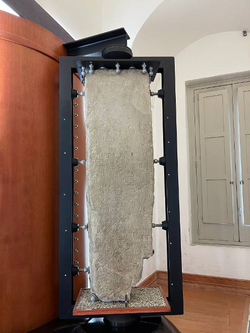

Home |
Le federazioni osche |
Localizzazione musei e siti |
Chi siamo |
Dove trovarci |
|
 |
|
inciso sul Cippus Abellanus, secondo lo studioso Domenico Caiazza. A Da parte di Maio Vestirkio figlio di Maio (nipote) di Stazio/ per patto commissario ad acta e que- store abellano e da parte di Maio Lucio figlio adottivo di Maio "magistrato dell'agro diviso" nola- no e dai legati abellani e dai legati nolani che per statuizione del senato proprio sono stati designati così si convenne circa il santuario di Ercole che è presso la fontana e circa il terreno che è presso il santuario che è compreso tra i termini esterni termini che con comune sentenza fu approvato che fossero posti affinchè il santuario e questo terreno sia cosa comune e questo territorio sia cosa comune e di questo santuario (anche) e del terreno il frutto sia comune ad ambedue. Ma dei Nolani siano i doni che nel fano di Ercole i Nolani di suo qui abbiamo deposto e degli Abel- lani siano i doni che nel fano di Ercole di suo gli Abellani qui abbiano deposto |